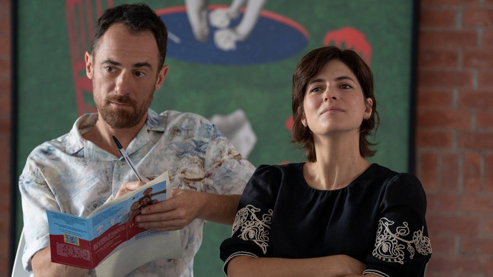

Streaming nel weekend di Halloween: 30 ottobre-1 novembre
Da Nocturne con Liev Schreiber e Stephen Graham a Dexter: Resurrection 2, fino al thriller svedese di Netflix: quattro titoli per il weekend, con il nostro giudizio d'attesa
Il 31 ottobre cade di sabato, quindi il weekend ha un tema obbligato, e le piattaforme lo sanno. C'è un serial killer in cella che gioca con la polizia, ma c'è anche il più famoso della televisione, che torna a New York. Poi due coppie scambiano casa e finiscono in un incubo. Chi la notte di Halloween preferisce restare sul divano senza sobbalzare, invece, ha una commedia italiana sull'adozione.
Abbiamo scelto quattro titoli e a ognuno diamo un giudizio d'attesa, cioè quanto ci incuriosisce prima di averlo visto per intero. Quando esistono recensioni uscite, le citiamo con testata e autore, perché una nostra impressione senza visione non vale quanto il parere di chi l'ha guardato. Le date sono quelle italiane: alcuni database internazionali riportano il giorno americano, che a volte differisce di ventiquattro ore.
Nocturne (Apple TV, dal 30 ottobre)
È il titolo che ci aspetta più di tutti, perché unisce un genere solido e un cast da prima fila. La serie, in dieci episodi, nasce dai romanzi Lazarus e The Sandman firmati con lo pseudonimo Lars Kepler dai coniugi svedesi Alexander Ahndoril e Alexandra Coelho Ahndoril. La crea Rowan Joffé, la dirigono Tim Van Patten e Anu Menon. Tutto parte da una vittima di Jurek Walter, il killer che ha il volto di Stephen Graham, ritrovata viva. Il detective Jonah Lynn (Liev Schreiber) deve correre per salvare chi manca ancora all'appello, mentre la sua allieva, l'agente FBI Saga Bauer (Zazie Beetz), entra sotto copertura per farsi dire la verità dall'assassino.
Chi l'ha già vista in parte è favorevole, anche se i giudizi in giro sono ancora pochi. Il 27 ottobre Saloni Gajjar, dopo sette episodi su dieci, le dà un B+ su AV Club e scrive che Graham ruba la scena: con quelle espressioni gelide e il sorriso appena accennato, le ricorda Anthony Hopkins nel Silenzio degli innocenti. Il cuore emotivo della serie, però, per Gajjar sono Schreiber e Beetz.
Il nostro giudizio d'attesa è alto. Una storia in cui il male sta fermo in una cella e il pericolo è tutto nelle parole è il terreno su cui Graham dà il meglio, quindi ci aspettiamo scene da ricordare. Il rischio è quello del già visto, perché il mostro dietro le sbarre è un genere molto frequentato: più che una sorpresa di struttura, aspettatevi un interprete da guardare. Il nostro è un parere d'attesa, non una recensione, perché non abbiamo visto la serie.
Dexter: Resurrection 2 (Paramount+, dal 30 ottobre)
La seconda stagione di Dexter: Resurrection arriva su Paramount+ proprio per Halloween e coincide con i vent'anni della saga nata dai romanzi di Jeff Lindsay. Michael C. Hall torna nei panni di Dexter Morgan e il racconto resta a New York, dove, secondo Cinefilos, il protagonista deve vedersela con due assassini diversi: uno con decenni di storia criminale alle spalle e uno comparso da poco, che terrorizza la città con metodi mai visti. Come se non bastasse, Dexter attraversa una crisi di mezza età. Al centro resta il rapporto con il figlio Harrison, che la presentazione chiama «il capitolo più oscuro» della loro storia.
Tra i volti nuovi c'è Uma Thurman, e con lei Dan Stevens e Brian Cox, mentre lo showrunner resta Clyde Phillips. Recensioni non ne abbiamo trovate, perché la stagione debutta oggi.
Il nostro giudizio d'attesa è prudente ma curioso. Con Cox e Thurman nel cast si può sperare in antagonisti all'altezza, anche perché Dexter è sempre stato bravo a raccontare il mostro dal di dentro e meno a costruirgli avversari credibili. Se avete già visto la prima stagione, è il titolo da guardare per primo, ma chi parte da zero farà meglio a recuperarla prima.
Scambio di bugie (Netflix, dal 30 ottobre)
Sono quattro episodi, tutti online insieme, quindi è la serata giusta per chi vuole un thriller breve. Due coppie che non si sono mai incontrate decidono di scambiarsi casa per qualche settimana. Helene e Carl (Frida Gustavsson e Fares Fares) lasciano l'arcipelago di Stoccolma per una villa in Sicilia, mentre Scarlett e Adam (Emma Appleton e Jakob Oftebro) fanno il percorso opposto. Secondo Cinefilos i sospetti nascono quando la villa non corrisponde alle foto dell'annuncio, e da lì la domanda si sposta dalla casa alle persone: quanto conosciamo davvero chi abbiamo accanto?
La regia è di Kasper Barfoed, la sceneggiatura di Amanda Högberg e Axel Stjärne, e il racconto adatta un romanzo dello scrittore svedese Stefan Ahnhem. La nostra attesa è curiosa: l'incontro tra il noir nordico e il sole siciliano è un'idea visiva forte, perché il giallo scandinavo di solito vive di neve e di buio, e quattro puntate sono il formato giusto per non diluire il mistero. Il punto debole possibile è la premessa dello scambio di case, vista tante volte nel thriller domestico, ma tutto dipenderà da quanto saprà sorprendere nel finale.
Noi, un po' meglio (Netflix, dal 29 ottobre)

Il film di Daniele Luchetti, su Netflix dal 29 ottobre, mette in scena Simone (Elio Germano), che ama l'ordine e vuole una famiglia, e Lucia (Maria Chiara Giannetta), indipendente e poco incline alle convenzioni. Il loro amore regge finché non decidono di adottare un bambino: allora si scontrano con i giudizi altrui e con le proprie differenze. Nel cast ci sono anche Anna Bonaiuto e Filippo Nigro.
Su Cinefilos Valeria Maiolino gli dà 3,5 stelle su 5, apprezza la sceneggiatura intelligente e l'affetto che passa tra i due protagonisti, ma osserva che il copione tiene lontano il conflitto più duro fino al finale. Per Maiolino il film sostiene che il compromesso serve, ma solo finché non si smette di essere sé stessi (parafrasi nostra). Il nostro giudizio d'attesa è affettuoso: è la scelta per chi cerca una commedia con una questione concreta, quella dell'adozione, anche se, come scrive Maiolino, il conflitto vero arriva tardi.
E poi, se avanza tempo
Lunedì 2 novembre su HBO Max torna The Gilded Age con la quarta stagione, la saga in costume di Julian Fellowes sulle rivalità dell'alta società newyorchese di fine Ottocento. Giovedì 5 novembre su Netflix arriva invece la seconda stagione di Black Doves con Keira Knightley e Ben Whishaw, quindi conviene non finire tutto subito.
Cosa vedere per primo?
Se avete una sola serata, scegliete Nocturne: è l'unica serie del weekend con una recensione già uscita, ed è favorevole. Per la notte di Halloween vera, però, il titolo più in tema è Dexter: Resurrection 2. Scambio di bugie dura quattro puntate, quindi si finisce in una sera. Chi di mostri ne ha abbastanza, invece, può ripiegare su Noi, un po' meglio.
Quattro novità per un weekend di Halloween: Nocturne è la nostra scelta numero uno, ma Dexter: Resurrection 2 è la più in tema, perché cade proprio sulla notte giusta. Scambio di bugie è la più breve, mentre Noi, un po' meglio è la più rassicurante. E voi, con quale cominciate?
Domande frequenti
Dove vedere Nocturne con Liev Schreiber e Stephen Graham?
Su Apple TV dal 30 ottobre 2026. La serie ha dieci episodi ed è tratta dai romanzi Lazarus e The Sandman di Lars Kepler.
Quando esce Dexter: Resurrection 2 in Italia?
Il 30 ottobre 2026 su Paramount+, con Michael C. Hall come protagonista e Uma Thurman tra i nuovi arrivi.
Quanti episodi ha Scambio di bugie su Netflix?
Quattro, tutti disponibili insieme dal 30 ottobre 2026.
Fonti consultate (10)
- Sorrisi – Da «Drive – Cuori in pista» a «Noi, un po' meglio», i nuovi film e serie tv della settimana
- A.V. Club – Apple TV delivers a knockout thriller in Nocturne (Saloni Gajjar)
- Napolike – Dexter: Resurrection 2 su Paramount+ dal 30 ottobre
- Cinefilos – Dexter: Resurrection 2, il trailer
- Cinefilos – Scambio di bugie, il nuovo thriller Netflix in 4 episodi
- Cinefilos – Noi, un po' meglio, recensione di Valeria Maiolino
- Sorrisi – Noi, un po' meglio, l'amore di Elio Germano e Maria Chiara Giannetta
- 4Parete – Film e serie TV in streaming a novembre 2026
- TMDB – Nocturne
- TMDB – Dexter: Resurrection